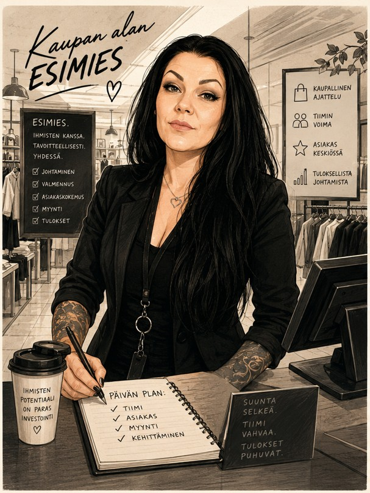

Työhistoriani olen työskennellyt lähes kokonaisuudessaan kaupan alan eri tehtävissä. Nuorempana aloitin myyjän tehtävistä ja etenin siitä myymäläpäälliköksi, jossa vastasin myymälän päivittäisestä toiminnasta, henkilöstöstä ja asiakaspalvelusta. Myymäläpäällikkönä opin johtamaan tiimiä, kehittämään myyntiä ja varmistamaan sujuvan asiakaskokemuksen. Työskentelin myös tukku- ja maahantuontiyrityksessä designerina ja esimiestehtävissä, jossa vastasin muun muassa varaston hallinnasta, henkilöstöstä, kaikesta visuaalisesta suunnittelutyöstä, asiakaspalvelusta, verkkokaupan suunnittelusta ja ylläpidosta, taloushallinnon erilaisista tehtävistä ja sidosryhmien kontaktoinnista Suomessa ja Euroopassa. Näissä tehtävissä kehitin organisointikykyjäni, ongelmanratkaisutaitojani ja kykyäni työskennellä tehokkaasti kiireisessä ympäristössä. Kaupan alan monipuoliset kokemukseni ovat antaneet minulle vahvan pohjan asiakaspalveluun, rekrytointiin, tiimityöhön ja liiketoiminnan ymmärtämiseen.
Mall&Mall Oy - Työskentelin myymäläpäällikkönä reilun vuoden ajan Hämeenlinnassa ja Espoossa vuosina 2024-2025. Yritys on lopetettu.
Easy Fishing Oy - Työskentelin suunnittelijana ja esimiestehtävissä vuosina 2011-2024. Yritys on lopetettu.
Motonet Oy - Työskentelin vastuumyyjänä vuosina 2009-2011.
Osuuskauppa Hämeenmaa - Työskentelin myyjänä vuosina 2005-2009.
Lisäksi olen työskennellyt Starkki Oy:ssa, SPAR-kauppaketjussa, Vepsäläisellä, Sotilaskotiyhdistyksessä ja ISS-Palveluissa. Olen työskennellyt myös Erämessuilla, Habitare-messuilla ja Studia-messuilla, sekä vapaaehtoistyössä.